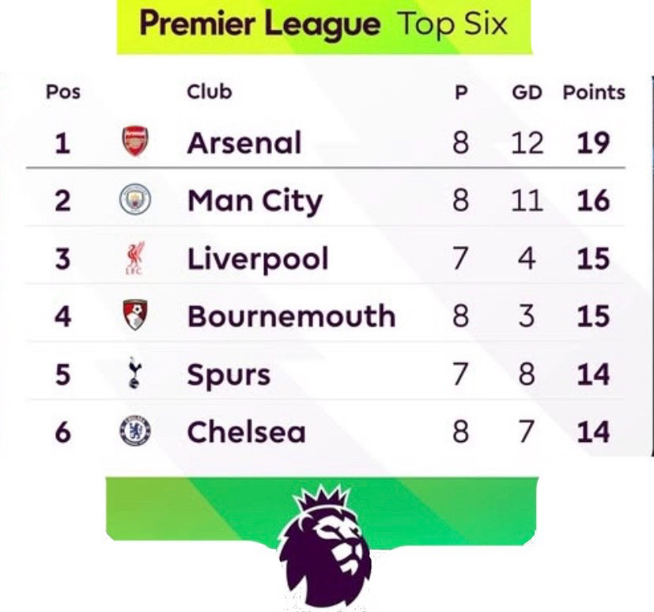
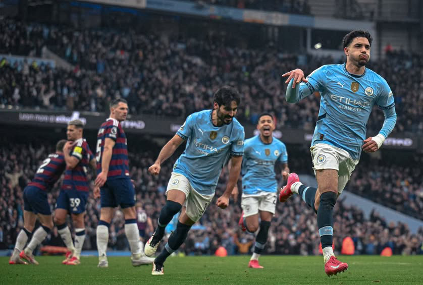
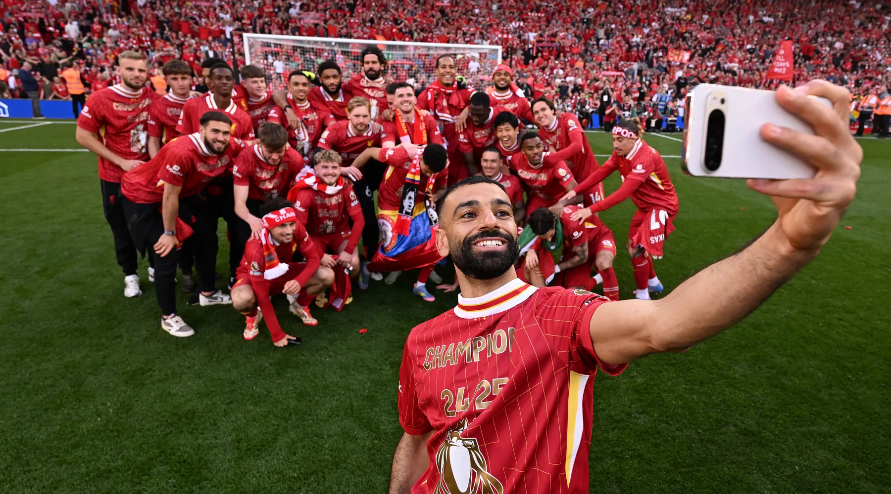

20 different teams are featured in every new edition of the premier league each season. Moreover, three newly promoted teams join the league to replace the relegated teams from last season. In the premier league, teams contend in three core contests, one being the title race, as well as securing spots in european competitions, and the last one being the relegation battle, where the teams with lower points battle to secure their place in the league next season and avoid relegation. Over the last five seasons, top clubs like Manchester City, Liverpool, and Arsenal, have been dominating the podium in terms of the total number of points each season. With Manchester City being the most dominant, by securing the title and winning the league 4 times in 5 seasons. As well as Liverpool who were in the clear with the most points last season and winning the league after a hard-fought season.

The current Premier League standings

Man City
Man City were arguably at the peak of their performance across multiple seasons, showing consistency, constant attacking and good defending. Allowing them to win the league four times in the last five seasons. Their consistent performances allowed them to set a new standard in English football. However, in the 24-25 season city saw a noticeable dip that had people questioning their performance which was way below their usual level. The sparking talk about their performance had them bouncing back this season in hopes of dominating the league and winning other titles.

Liverpool
Over the past few seasons, Liverpool have experienced a mix of ups and downs in the premier league. After winning the title in 2019-20 with a dominant performance, they remained strong in 2021-22 where they finished just behind Man City in a close title race. However, the 2022-23 season was a disappointing one by their standards, with the team finishing outside the top four. Liverpool then bounced back last season and returned to the very top, winning the premier league and grabbing their 20th league title. Their journey proved that they remain one of the most competitive and exciting teams to watch.